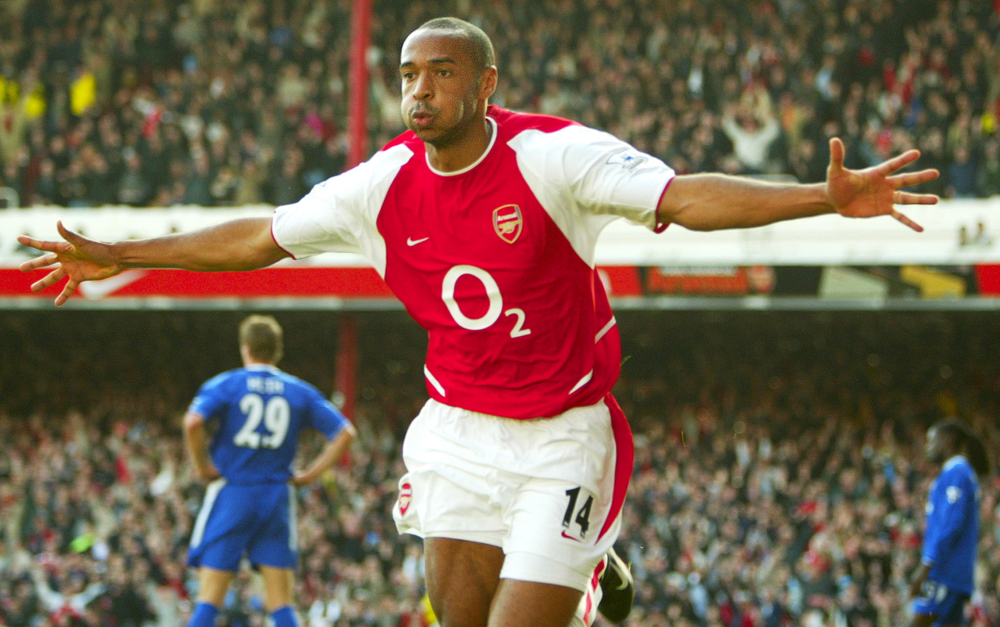

Pavel NEDVED - 2003
- Un décathlonien du football
En 2003,
Nedved
est récompensé à 31 ans par le Ballon d'or récompensant le meilleur joueur évoluant en Europe.
Nationalité : Tchèque
Né le 30 août 1972, à Skalna (RTC)
Taille : 1,77
Poids : 71 kg
Poste : milieu
Clubs : Sokol Skalna (1978-1985), Skoda Plzen (1985-1991), Dukla Prague (1991-1992), Sparta Prague (1992-1996), Lazio Rome (1996-2001), Juventus Turin (depuis 2001)
Palmarès : Coupe des Coupes 1999 ; Championnat de Tchécoslovaquie 1993 ; Championnat de République tchèque 1994 et 1995 ; Championnat d'Italie 2000, 2002 et 2003 ; Coupe de Bohème-Moravie 1993 ; Coupe de République tchèque 1996 ; Coupe d'Italie en 1998 et 2000 ; Supercoupe d'Italie en 2000, 2002 et 2003
Bilan en club : 670 matchs, 147 buts
Bilan en équipe de République tchèque : 83 sélections A, 17 buts (1994-2004)
Bilan en phase finale de Coupe du monde : néant
Palmarès Ballon d'Or : vainqueur en 2003
Classement du Ballon d’Or France Football 2003 :
Pavel Nedved (République tchèque / Juventus Turin)

Thierry Henry (France / Arsenal)
Paolo Maldini (Italie / Milan AC)
Retour à l'accueil
 Pavel NEDVED - 2003
Pavel NEDVED - 2003